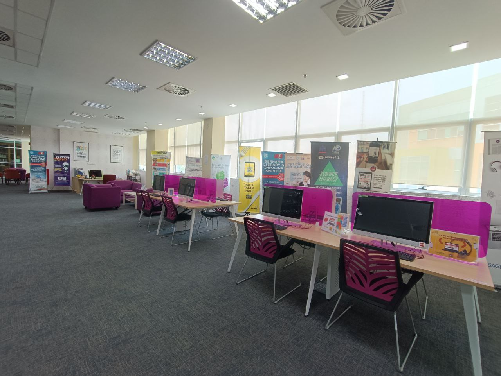
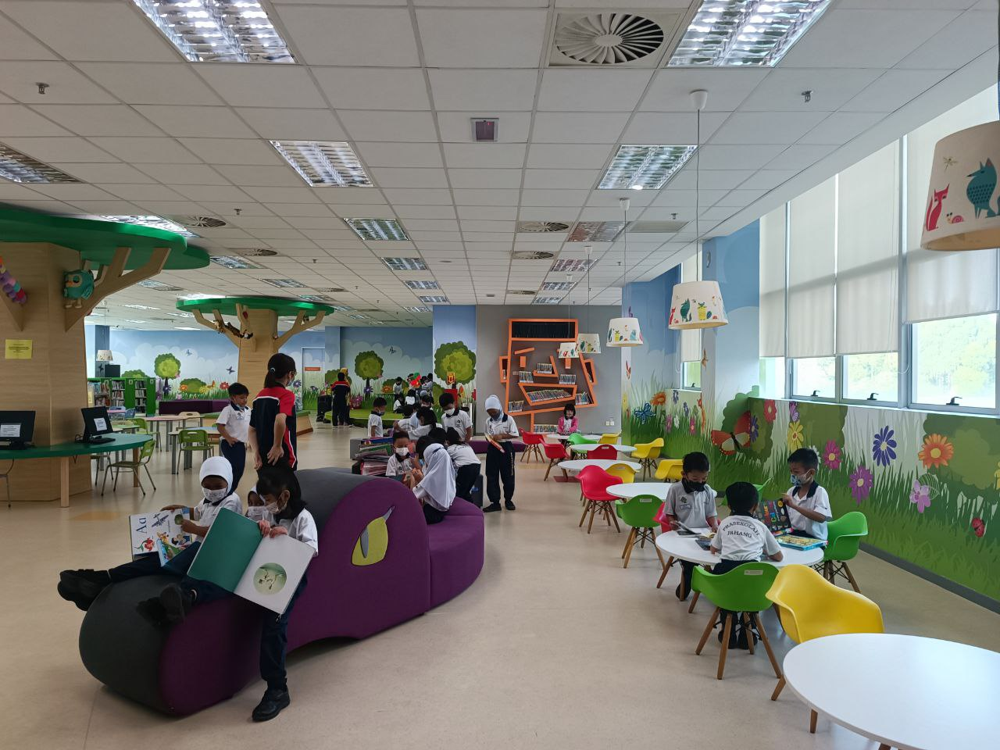
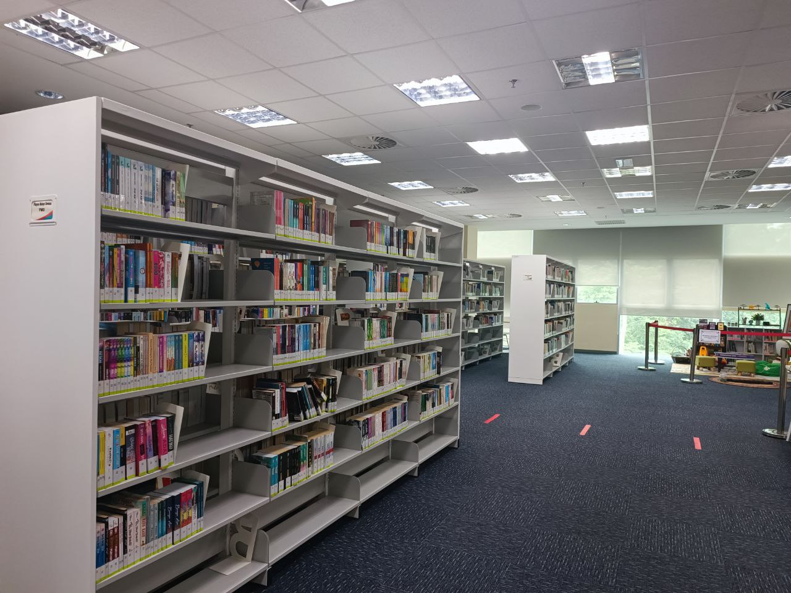
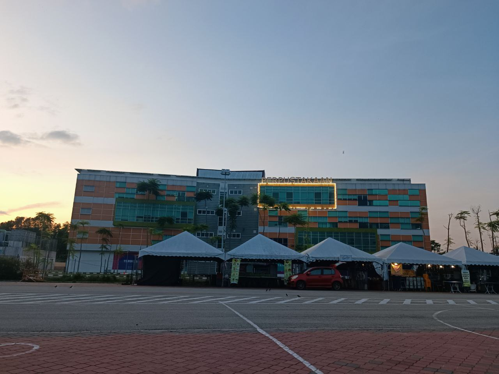
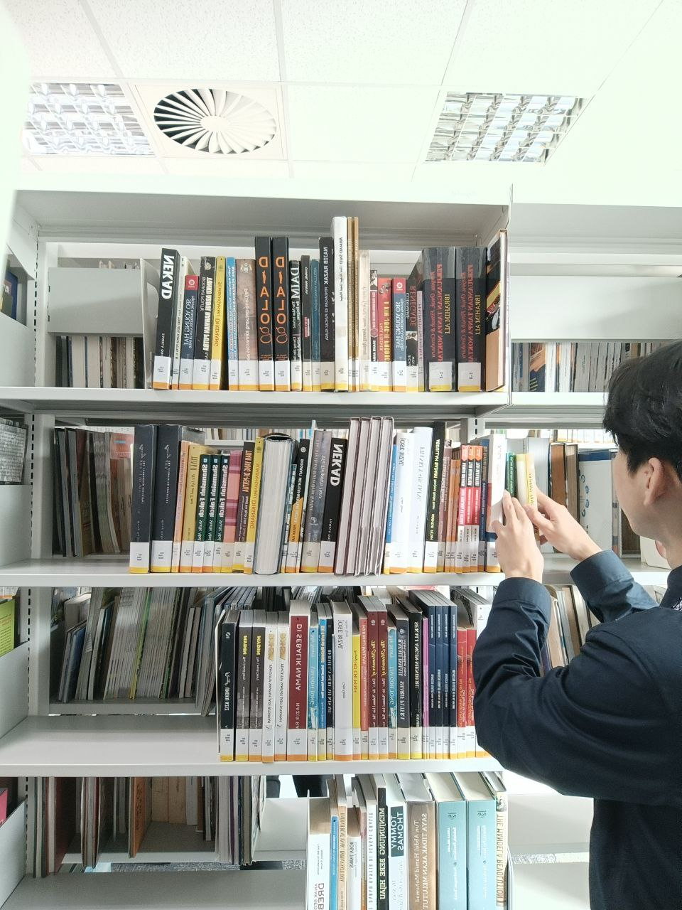
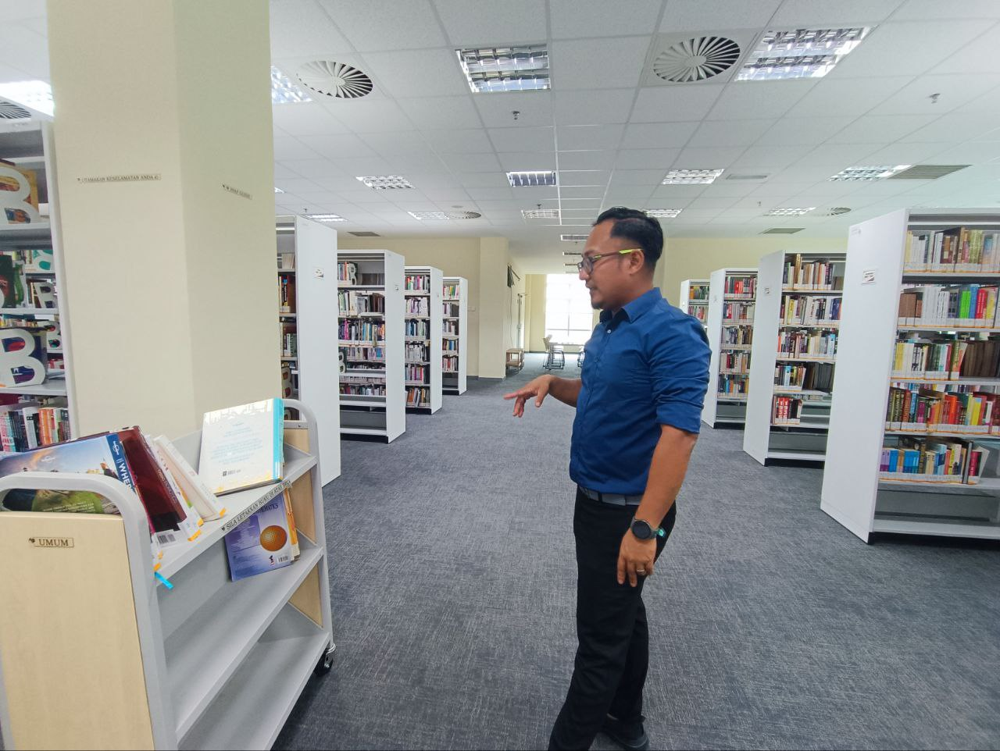

WORK EXPERIENCE
During my Industrial Training at Perbadanan Perpustakaan Awam Pahang (PPAP), I had an incredible experience and thoroughly enjoyed working at the library. It provided me with a multitude of valuable experiences. The vibrant atmosphere, filled with the smell of books and the buzz of eager readers, instilled in me a deep appreciation for the importance of knowledge and the role libraries play in fostering a love for learning. Collaborating with the knowledgeable librarians and engaging with diverse patrons allowed me to enhance my communication and interpersonal skills. Additionally, I gained practical knowledge in library management, cataloging, and assisting visitors in their search for information. This enriching experience has not only deepened my passion for literature but also broadened my horizons, leaving me with cherished memories and a newfound appreciation for the invaluable services libraries offer to society.





